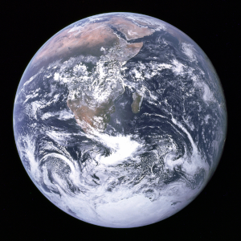
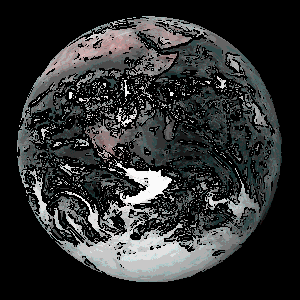
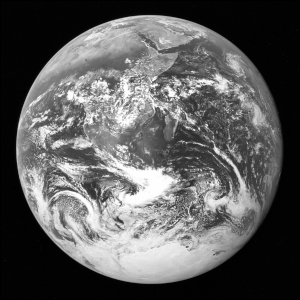
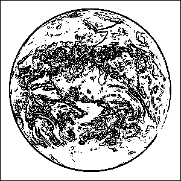

Assignment 7: Where others fear to thread
Due Friday, December 12th, before midnight
The goals for this assignment are:
-
Program several threaded applications
-
Use thread synchronization features
1. Backups
Write a program that periodically backs up text that the user types on the screen.
$ ./backup
usage: ./backup [num_seconds]
$ ./backup 3
Hello, friends. Let's always keep backups!
^C
$ ls -a
.
..
.log-1764027171.txt
.log-1764027174.txt
Makefile
backup.cRequirements/Hints:
-
Create a background thread to periodically save logs.
-
Save logs to a file with the name .log-<time>.txt. Notice that the name starts with a dot. This is a hidden file. To see hidden files, do
ls -aorls -al. You can usetime()for the filename. -
Allow the user to write up to 4 KB of text, or 4096, characters.
-
The user can press Ctrl-C to quit
2. Comics
2.1. Background
In this assignment, you will implement a comic filter for images. You will implement the filter both single- and multi-threaded.
Before:

After:

This filter requires three steps:
-
Extracting edges and saving them in a new image
-
Reducing colors
-
Combining the edges with the reduced color image
| We will work with PPM files for this assignment. Reuse your PPM implementation from your previous assignments. |
2.1.1. Extract edges
Edges correspond to pixels with large changes in intensity between neighbors. We use a Sobel operator to estimate edges.
First, we need to compute the intensity of each pixel and save it to either a new image or 2D matrix (your choice) The intensity I is given by the following formula.
If we save the intensity to the red, green, and blue channels of each pixel, we will get a grayscale image.

From the intensity, we can compute edges for each pixel Eij using the following formula.
\$GY_{i,j} = -p_{i-1,j-1} - 2*p_{i,j-1} - p_{i+1,j-1} + p_{i-1,j+1} + 2*p_{i,j+1} + p_{i+1,j+1}\$
\$value = \sqrt{GX_{i,j} * GX_{i,j} + GY_{i,j} * GY_{i,j} }\$
\$E_{i,j} = value > 128? 0 : 255\$

2.1.2. Reduce colors
We reduce colors by quantizing the colors of the image into B buckets. Each color channel is handled individually using the same formula. For example, for red
where bucketsize is 255 divided by the desired number of buckets N. In the image below, noticed the changes in color at the poles.
2.1.3. Putting it together
The final effect is achieved by multiplying the edge image (Eij) with the reduced image (Rij). Each color channel is handled independently.
2.2. Single-threaded
In the file, filter.c, implement a single-threaded program that applies a comic effect to the image "earth-small.ppm".
In this question, you will get the core algorithm working, before re-implementing it to be multithreaded in
the next question.
$ time ./filter
real 0m0.518s
user 0m0.513s
sys 0m0.001sRequirements/Hints:
-
This program can be simple. You may hard-coded the input file (earth-small.ppm).
-
Your program must output a PPM file named
earth-small-comic.ppm -
Use software that can view PPM files to check your work, either via VS Code, eog (Eye of Gnome), Gimp, Photoshop, etc
2.3. Multi-threaded
In the file, filter_multithreaded.c, implement a program that applies a comic effect using multiple threads.
It should run much faster than your single threaded version.
$ ./filter_multithreaded -h
usage: ./filter_multithreaded -N <NumThreads> -f <ppmfile>
$ time ./filter_multithreaded
Thread sub-image slice: rows (0,75)
Thread sub-image slice: rows (75,150)
Thread sub-image slice: rows (150,225)
Thread sub-image slice: rows (225,300)
real 0m0.249s
user 0m0.717s
sys 0m0.000sRequirements and recommendations:
-
Each thread should divide the work of filtering the image. I recommend you divide the image into horizontal slices for faster memory access (not square blocks!)
-
You can assume that N will divide the images evenly.
earth.ppmhas resolution 3000x3000.earth-small.ppmhas resolution 300x300. -
Your program should output a file that matches the original but with comic in the basename, e.g.
earth.ppmshould becomeearth-comic.ppm -
Your program must support the command line arguments.
-
Use either join (main thread) or barriers (within threads) to wait for a step to complete before a thread starts processing the next step.
-
Use additional PPM files and 2D arrays to store the results of intermediate steps.